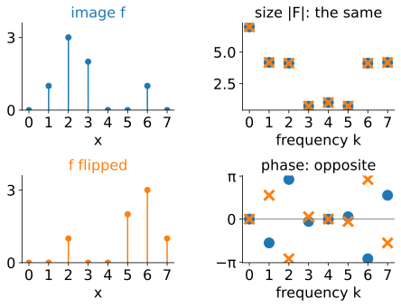
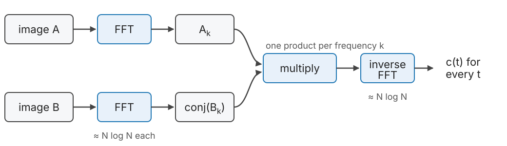
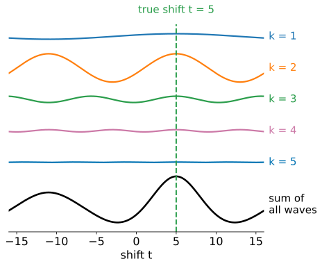
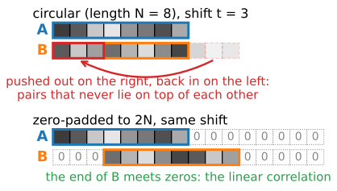
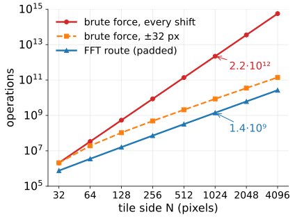
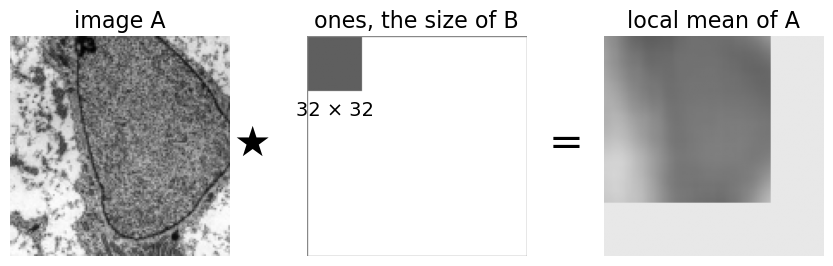

Last unit: slide image B over image A and score every shift; the cross-correlation c(t) = \sum_x A(x+t)\,B(x) for all shifts costs about N^2 operations for N pixels. Today: all shifts at once with three FFTs.
Correlation is a convolution with a flipped image; flipping a real image conjugates its spectrum.
So: FFT both, multiply one spectrum by the conjugate of the other, inverse FFT.
Why it works, in pictures: every wave votes for the shifts at which it agrees.
The FFT assumes the images repeat: circular vs linear correlation, zero-padding.
The cost, worked out, and when brute force still wins. NCC with the FFT.
Recall: complex numbers z = |z|e^{i\varphi}, \bar z = |z|e^{-i\varphi}, z\bar z = |z|^2.
Slides titled The math give the formulas and proofs; the ideas are complete without them.
Three facts from earlier units
Correlation vs convolution (the kernels unit): correlation multiplies the pixels under the kernel as they are; convolution flips the kernel first. Correlating with B is convolving with B flipped.
The convolution theorem (the Fourier unit): convolution in the image is a product of the spectra, one multiplication per frequency.
The FFT (the Fourier unit): the DFT of N samples in about N \log_2 N steps instead of N^2.
One more fact, new today: for a real image, flipping it in space (reading it backwards) gives the complex conjugate of its spectrum: same sizes, opposite phases.

All shifts at once

c(t) for every shift t = inverse FFT of A_k \cdot \overline{B_k}.
Two forward FFTs, one product per frequency, one inverse FFT.
The correlation is a convolution of A with B flipped, and flipping B conjugates its spectrum.
The math: the correlation theorem
Signals of length N, indices modulo N, DFT F_k = \sum_x f(x)\,e^{-2\pi i kx/N}. The circular cross-correlation c(t) = \sum_x f(x+t)\,g(x) has the DFT \hat c_k = \sum_t e^{-2\pi i kt/N} \sum_x f(x+t)\,g(x) = \sum_x g(x)\,e^{2\pi i kx/N} \sum_t f(x+t)\,e^{-2\pi i k(x+t)/N} = \overline{G_k}\;F_k, substituting u = x + t in the inner sum, and using that g is real, so \sum_x g(x)e^{2\pi i kx/N} = \overline{G_k}.
Equivalently: c = f * g^- with g^-(x) = g(-x), and \widehat{g^-} = \overline{G} for real g; then the convolution theorem. The same holds in 2D with kx \to k_x x + k_y y and N \to each side.
Why the product works: waves vote
Write both images as sums of waves (the Fourier unit). Look at one frequency k:
The wave in A and the wave in B have the same frequency, but each has its own position (phase). A_k \overline{B_k} records how far B’s wave is shifted relative to A’s (the phase difference) and how strong the wave is in both.
The inverse FFT adds all the waves back up. At a shift t, each wave’s contribution is largest if moving by t makes its two copies line up.
At the true shift all waves line up: their votes add up to the peak. Elsewhere they partly cancel.
Strong waves (usually the slow ones) get big votes. Next unit: give every wave the same vote.

Try it: FFT vs brute force
By hand: a length-4 example
A = (0, 1, 2, 0) and B = (1, 2, 0, 0): B’s pattern sits one step to the left, so B belongs at t = 1 on A.
Directly:c(t) = \sum_x A(x+t)B(x) with wrap-around: c = (2, 5, 2, 0) for t = 0, 1, 2, 3. Peak at t = 1.
Via the DFT (powers of -i, the Fourier unit):
k
0
1
2
3
A_k
3
-2 - i
1
-2 + i
B_k
3
1 - 2i
-1
1 + 2i
A_k\overline{B_k}
9
-5i
-1
5i
Inverse DFT, c(t) = \tfrac14\sum_k (A_k\overline{B_k})\, i^{kt}: c(0) = \tfrac14(9 - 5i - 1 + 5i) = 2, c(1) = \tfrac14(9 + 5 + 1 + 5) = 5, and so on: the same (2, 5, 2, 0).
Circular or linear?
The DFT treats each image as one period of a repeating pattern. Shifting B pushes it out on one side and back in on the other: the FFT gives the circular correlation (the “wrap” border rule of the kernels unit).
Two tiles that only partly overlap are not periodic: the wrapped-around part compares pixels that never lie on top of each other.
The circular peak can be wrong, and a shift t cannot be told from t - N.
Zero-pad: put each image into an array of at least 2N - 1 (in practice 2N) filled with zeros. Shifted parts now fall on zeros instead of wrapping: the linear correlation, exactly what sliding computes.
Padding costs FFTs four times as large in 2D. Stitching tools often skip it and test the candidate shifts instead (the stitching unit).

Try it: wrap-around and padding
What it costs
Two 1024 \times 1024 tiles, padded to 2048 \times 2048 (M \approx 4.2 \cdot 10^6 samples):
One complex FFT: about 5M\log_2 M \approx 4.6 \cdot 10^8 operations. Three FFTs: 1.4 \cdot 10^9.
About 1600 times fewer operations: under a second instead of 18 minutes at the same speed (tuned FFTs are faster still).
But with a small search window, brute force is competitive:
\pm 32 pixels: 4.3 \cdot 10^9 multiply-adds, 8.6 \cdot 10^9 operations: only 6 times more than the FFT.
Up to about \pm 12 pixels, brute force needs fewer operations.
The FFT wins when the shift is unknown or large.

The math: counting operations
With N \times N images padded to M = (2N)^2 samples, and \approx 5M\log_2 M real operations per complex FFT: \text{FFT route} \approx 3 \cdot 5M\log_2 M + 6M, \qquad \text{brute force} \approx 2 \sum_{t}(N - |t_x|)(N - |t_y|) = 2N^4. For N = 1024: 1.4 \cdot 10^9 against 2.2 \cdot 10^{12}. The ratio grows like N^2/\log N.
A window |t_x|, |t_y| \le w costs 2\big((2w + 1)N - w(w+1)\big)^2 \approx 2(2w+1)^2N^2; this equals the FFT route at (2w+1)^2 \approx 30\log_2(4N^2), i.e. w \approx 12 for N = 1024.
NCC with the FFT
NCC at shift t needs, over the overlap: the sum of products, the sums of A and B, and the sums of their squares.
Sum of products: a cross-correlation, one FFT product.
Local sums of A and A^2 (and of B, B^2): the sum of the pixels of A that lie under B at shift t is A correlated with a block of ones the size of B. Also a correlation: FFT again.
Then NCC for every shift from these sums, pixel by pixel.
The local sums are box filters; the integral-images elective computes them even faster with summed-area tables. Template matching in the last unit’s demo works this way.

The math: NCC from correlations
With the overlap mask M_B (ones where B has pixels), all sums over the overlap \Omega_t are correlations: S_{AB}(t) = \sum f(x+t)g(x), \quad S_A(t) = \sum f(x+t)M_B(x), \quad S_{AA}(t) = \sum f(x+t)^2 M_B(x), \quad n(t) = \sum M_A(x+t)M_B(x), and likewise S_B, S_{BB} with M_A. Then \mathrm{NCC}(t) = \frac{S_{AB} - S_A S_B/n}{\sqrt{\big(S_{AA} - S_A^2/n\big)\big(S_{BB} - S_B^2/n\big)}}. Six correlations (all zero-padded), each one product of FFTs: still \mathcal O(M\log M). For a template that always lies inside A, n, S_B and S_{BB} are constants.
Summary
Cross-correlation for all shifts = inverse FFT of A_k\overline{B_k}: two FFTs, a product, an inverse FFT.
Each frequency votes with its phase difference and its strength; at the true shift all votes agree.
The FFT gives the circular correlation; for partly overlapping images zero-pad to 2N to get the linear one.
About N\log N instead of N^2 operations: thousands of times faster for megapixel tiles, but a small search window can be cheaper by brute force.
NCC also goes through FFTs: the products and the local sums are all correlations.